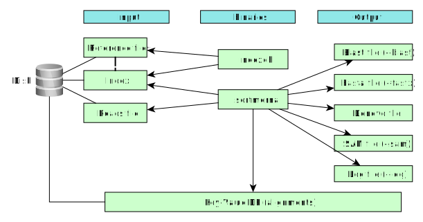

<html>
    <head>
        <title>SortMeRNA User Manual</title>
        <link id="com_css" rel="stylesheet" href="./css/com.css">
        <link id="color_css" rel="stylesheet" href="./css/light.css">
    </head>
    <body>
        <div id="menu"></div>

        <div id="content">
        <h1>SortMeRNA User Manual</h1>
        <p>October 2018, version 3.0.0</p>
        <div>
            <!--h1>SortMeRNA User Manual</h1-->
            <h2>Contents</h2>
            <ol id="cont">
                <li><a href="#intro">1 Introduction</a></li>
                <li><a href="#instal">2 Installation</a></li>
                <li><a href="#db">3 Databases</a></li>
                <li><a href="#use">4 Usage</a></li>
                    <ol>
                        <li><a href="#idxref">4.1 Index Reference files</a></li>
                    </ol>
                </li>
                <li><a href="#advan">5 Advanced options</a></li>
                <li><a href="#help">6 Help</a></li>
                <li><a href="#citat">7 Citation</a></li>
            </ol>            
        </div>

        <p class="code">This manual is for SortMeRNA version 3.0.0</p>

        <div id="intro">
            <h2>1 Introduction</h2>
            <p>
                SortMeRNA is a local sequence alignment tool for filtering, mapping and OTU clustering. The core algorithm is based on approximate seeds and allows for fast and sensitive analyses of NGS reads. The main application of SortMeRNA is filtering rRNA from metatranscriptomic data. Additional applications include OTU-picking and taxonomy assignation available through QIIME v1.9+ (http://qiime.org). SortMeRNA takes as input a file of reads (fasta or fastq format) and one or multiple rRNA database file(s), and sorts apart aligned and rejected reads into two files specified by the user. SortMeRNA works with Illumina, 454, Ion Torrent and PacBio data, and can produce SAM and BLAST-like alignments.
            </p>
            <div>
                
                <P>Figure 1. High view architecture</P>
            </div>
        </div><!-- END Introduction -->

        <div id="instal">
                <h2>2 Installation</h2>
                For installation istructions, please refer to <a href="../../README.md">README.md</a>
        </div>

        <div id="db">
            <h2>3 Databases</h2>
            SortMeRNA comes prepackaged with 8 databases.
            <p>
All databases were derived from the SILVA SSU and LSU databases (release 119) and the RFAM databases using HMMER 3.1b1 and SumaClust v1.0.00.
            </p>
            <table id="databases_tbl">
                <tr><th class="col_1">representative database</th><th class="col_2">%id</th><th class="col_3"># seq (clustered)</th><th class="col_4">origin</th><th class="col_5"># seq (original)</th></tr>
                <tr><td>silva-bac-16s-id90</td><td>90</td><td>12798</td><td>SILVA SSU Ref NR v.119</td><td>464618</td></tr>
                <tr><td>silva-arc-16s-id95</td><td>95</td><td>3193</td><td>SILVA SSU Ref NR v.119</td><td>18797</td></tr>
                <tr><td>silva-euk-18s-id95</td><td>95</td><td>7348</td><td>SILVA SSU Ref NR v.119</td><td>51553</td></tr>
                <tr><td>silva-bac-23s-id98</td><td>98</td><td>4488</td><td>SILVA LSU Ref v.119</td><td>43822</td></tr>
                <tr><td>silva-arc-23s-id98</td><td>98</td><td>251</td><td>SILVA LSU Ref v.119</td><td>629</td></tr>
                <tr><td>silva-euk-28s-id98</td><td>98</td><td>4935</td><td>SILVA LSU Ref v.119</td><td>13095</td></tr>
                <tr><td>rfam-5s-id98</td><td>98</td><td>59513</td><td>RFAM</td><td>116760</td></tr>
                <tr><td>rfam-5.8s-id98</td><td>98</td><td>13034</td><td>RFAM</td><td>225185</td></tr>
            </table>
            <p>
HMMER 3.1b1 and SumaClust v1.0.00 were used to reduce the size of the original databases to the similarity listed in column 2 (%id) of the table above (see /sortmerna/rRNA databases/README.txt for a list of complete steps).
            </p>
            <p>
These representative databases were specically made for fast ltering of rRNA. Approximately the same number of rRNA will be ltered using silva-bac-16s-id90 (12802 rRNA) as using Greengenes 97% (99322 rRNA), but the former will run signicantly faster.
            </p>
            <p>
id %: members of the cluster must have identity at least this % id with the representative sequence.
            </p>
            <p>
<b>Remark</b>: The user must first index the fasta database by using the command <span class="code">indexdb</span> and then filter/map reads against the database using the command <span class="code">sortmerna</span>.
            </p>
            
        </div><!-- END Databases section-->

        <div id="use">
            <h2>4 Usage</h2>

            <h3 id="idxref">4.1 Index the rRNA database files:</h3>
            <p>
        Use executable <span class="code">indexdb</span> to build index database from rRNA reference files.
            </p>
            <p>Display the man page:</p>
            <p class="code">$ indexdb -h</p>
<pre>
    Program:     SortMeRNA version 3.0.0
    Copyright:    2016-2018 Clarity Genomics BVBA::
                    Turnhoutseweg 30, 2340 Beerse, Belgium
                    2014-2016 Knight Lab:
                    Department of Pediatrics, UCSD, La Jolla
                    2012-2014 Bonsai Bioinformatics Research Group:
                    LIFL, University Lille 1, CNRS UMR 8022, INRIA Nord-Europe
    Disclaimer:   SortMeRNA comes with ABSOLUTELY NO WARRANTY; without even the
                    implied warranty of MERCHANTABILITY or FITNESS FOR A PARTICULAR PURPOSE.
                    See the GNU Lesser General Public License for more details.
    Contributors: Jenya Kopylova   jenya.kopylov@gmail.com
                    Laurent Noé      laurent.noe@lifl.fr
                    Pierre Pericard  pierre.pericard@lifl.fr
                    Daniel McDonald  wasade@gmail.com
                    Mikaël Salson    mikael.salson@lifl.fr
                    Hélène Touzet    helene.touzet@lifl.fr
                    Rob Knight       robknight@ucsd.edu
    
    
    usage:   ./indexdb --ref db.fasta,db.idx [OPTIONS]:
    
    --------------------------------------------------------------------------------------------------------
    | parameter        value           description                                                 default |
    --------------------------------------------------------------------------------------------------------
    --ref           STRING,STRING   FASTA reference file, index file                            mandatory
                                    (ex. --ref /path/to/file1.fasta,/path/to/index1)
                                        If passing multiple reference sequence files, separate
                                        them by ':',
                                    (ex. --ref /path/to/file1.fasta,/path/to/index1:/path/to/file2.fasta,path/to/index2)
    [OPTIONS]:
    --tmpdir        STRING          directory where to write temporary files
    -m              INT             the amount of memory (in Mbytes) for building the index     3072
    -L              INT             seed length                                                 18
    --max_pos       INT             maximum number of positions to store for each unique L-mer  10000
                                    (setting --max_pos 0 will store all positions)
    -v              BOOL            verbose
    -h              BOOL            help      
</pre>

            <h4>4.1.1 Example 1: Build index DB using one RNA reference file</h4>

<p class="code">$ indexdb --ref sortmerna/rRNA_databases/silva-bac-16s-id90.fasta,./data/idx/silva-bac-16s-id90 -v</p>

            <pre>
    Program:     SortMeRNA version 3.0.0
    Copyright:    2016-2018 Clarity Genomics BVBA::
                    Turnhoutseweg 30, 2340 Beerse, Belgium
                    2014-2016 Knight Lab:
                    Department of Pediatrics, UCSD, La Jolla
                    2012-2014 Bonsai Bioinformatics Research Group:
                    LIFL, University Lille 1, CNRS UMR 8022, INRIA Nord-Europe
    Disclaimer:   SortMeRNA comes with ABSOLUTELY NO WARRANTY; without even the
                    implied warranty of MERCHANTABILITY or FITNESS FOR A PARTICULAR PURPOSE.
                    See the GNU Lesser General Public License for more details.
    Contributors: Jenya Kopylova   jenya.kopylov@gmail.com
                    Laurent Noé      laurent.noe@lifl.fr
                    Pierre Pericard  pierre.pericard@lifl.fr
                    Daniel McDonald  wasade@gmail.com
                    Mikaël Salson    mikael.salson@lifl.fr
                    Hélène Touzet    helene.touzet@lifl.fr
                    Rob Knight       robknight@ucsd.edu
    
    
    Parameters summary:
        K-mer size: 19
        K-mer interval: 1
        Maximum positions to store per unique K-mer: 10000
    
    Total number of databases to index: 1
    
    Begin indexing file sortmerna/rRNA_databases/silva-bac-16s-id90.fasta under index name ./data/idx/silva-bac-16s-id90:
    Collecting sequence distribution statistics ..  done  [0.538395 sec]
    
    start index part # 0:
        (1/3) building burst tries .. done  [25.566152 sec]
        (2/3) building CMPH hash .. done  [46.706292 sec]
        (3/3) building position lookup tables .. done [99.298707 sec]
        total number of sequences in this part = 12798
        temporary file was here: /tmp/sortmerna_keys_1253.txt
        writing kmer data to ./data/idx/silva-bac-16s-id90.kmer_0.dat
        writing burst tries to ./data/idx/silva-bac-16s-id90.bursttrie_0.dat
        writing position lookup table to ./data/idx/silva-bac-16s-id90.pos_0.dat
        writing nucleotide distribution statistics to ./data/idx/silva-bac-16s-id90.stats
        done.                  
            </pre>
    <h4>
4.1.2 Example 2: Build index DB using multiple RNA reference files.
    </h4>
    <p>
Multiple files can be indexed simultaneously by passing them as a <span class="code">':'</span> or <span class="code">';'</span> (on Windows) separated list to <span class="code">--ref</span> (no spaces allowed).
    </p>
    <p class="code">
$ indexdb --ref \<br/>
./sortmerna/rRNA_databases/silva-bac-16s-id90.fasta,./data/idx/silva-bac-16s-id90:\<br/>
./sortmerna/rRNA_databases/silva-bac-23s-id98.fasta,./data/idx/silva-bac-23s-id98:\<br/>
./sortmerna/rRNA_databases/silva-arc-16s-id95.fasta,./data/idx/silva-arc-16s-id95:\<br/>
./sortmerna/rRNA_databases/silva-arc-23s-id98.fasta,./data/idx/silva-arc-23s-id98:\<br/>
./sortmerna/rRNA_databases/silva-euk-18s-id95.fasta,./data/idx/silva-euk-18s-id95:\<br/>
./sortmerna/rRNA_databases/silva-euk-28s-id98.fasta,./data/idx/silva-euk-28s-id98:\<br/>
./sortmerna/rRNA_databases/rfam-5s-database-id98.fasta,./data/idx/rfam-5s-database-id98:\<br/>
./sortmerna/rRNA_databases/rfam-5.8s-database-id98.fasta,./data/idx/rfam-5.8s-database-id98
    </p>

<h3>
4.2 A guide to choosing <em>sortmerna</em> parameters for filtering and read mapping
</h3>

<p>
In SortMeRNA users have the option to output sequence alignments for their matching rRNA reads in the SAM or BLAST-like formats. Depending on the desired quality of alignments, different parameters must be set. <span class="code">Table 1</span> presents a guide to setting parameters for most use cases. In all cases, output alignments are always guaranteed to reach the threshold E-value score (default E-value=1). An E-value of 1 signifies that one random alignment is expected for aligning all reads against the reference database. The E-value in SortMeRNA is computed for the entire search space, not per read.
</p>

<table id="param_guide_tbl">
    <tr>
        <th>option</th>
        <th>speed</th>
        <th>description</th>
    </tr>
    <tr>
        <td rowspan="3">--num-alignments INT</td>
        <td>Very fast for INT = 1</td>
        <td>Output the first alignment passing E-value threshold (best choice if only filtering is needed)</td>
    </tr>
    <tr>
        <td>Speed decreases for higher value INT</td>
        <td>Higher INT signifies more alignments will be made & output</td>
    </tr>
    <tr>
        <td>Very slow for INT = 0</td>
        <td>All alignments reaching the E-value threshold are reported (this option is not suggested for high similarity rRNA databases, due to many possible alignments per read causing a very large file output)</td>
    </tr>
    <tr>
        <td rowspan="3">--best INT</td>
        <td>Fast for INT = 1</td>
        <td>Only one high-candidate reference sequence will be searched for alignments (determined heuristically using a Longest Increasing Sub-sequence of seed matches). The single best alignment of those will be reported</td>
    </tr>
    <tr>
        <td>Speed decreases for higher value INT</td>
        <td>Higher INT signies more alignments will be made, though only the best one will be reported</td>
    </tr>
    <tr>
        <td>Very slow for INT = 0</td>
        <td>All high-candidate reference sequences will be searched for alignments, though only the best one will be reported</td>
    </tr>
</table>

<p>Table 1: SortMeRNA alignment parameter guide</p>

<h3>4.3 Filter rRNA reads</h3>

<p>Use executable <span class="code">sortmerna</span> to filter rRNA reads against an indexed rRNA database.</p>

<p>View man page for <span class="code">sortmerna</span></p>

<p class="code">$ sortmerna -h</p>
<pre>
    Program:      SortMeRNA version 3.0.0
    Copyright:    2016-2018 Clarity Genomics BVBA:
                  Turnhoutseweg 30, 2340 Beerse, Belgium
                  2014-2016 Knight Lab:
                  Department of Pediatrics, UCSD, La Jolla
                  2012-2014 Bonsai Bioinformatics Research Group:
                  LIFL, University Lille 1, CNRS UMR 8022, INRIA Nord-Europe
    Disclaimer:   SortMeRNA comes with ABSOLUTELY NO WARRANTY; without even the
                  implied warranty of MERCHANTABILITY or FITNESS FOR A PARTICULAR PURPOSE.
                  See the GNU Lesser General Public License for more details.
    Contributors: Jenya Kopylova   jenya.kopylov@gmail.com
                  Laurent Noé      laurent.noe@lifl.fr
                  Pierre Pericard  pierre.pericard@lifl.fr
                  Daniel McDonald  wasade@gmail.com
                  Mikaël Salson    mikael.salson@lifl.fr
                  Hélène Touzet    helene.touzet@lifl.fr
                  Rob Knight       robknight@ucsd.edu
  
  
    usage:   ./sortmerna --ref db.fasta,db.idx --reads file.fa --aligned base_name_output −d kvdb_path [OPTIONS]:
    OR
    usage:   ./sortmerna --ref db.fasta,db.idx --reads-gz file.fa.gz --aligned base_name_output −d kvdb_path [OPTIONS]:
  
    -------------------------------------------------------------------------------------------------------------
    | option              type-format       description                                              default    |
    -------------------------------------------------------------------------------------------------------------
    [REQUIRED OPTIONS]
      --ref              STRING,STRING   FASTA reference file:index file                           mandatory
                                            If passing multiple reference files, separate them
                                            using the delimiter ':' (Linux) or ';' (Windows),
                   (ex. --ref /path/to/file1.fasta,/path/to/index1:/path/to/file2.fasta,path/to/index2)
      --reads            STRING          FASTA/FASTQ raw reads file                                mandatory
          OR
      --reads-gz         STRING          FASTA/FASTQ compressed (with gzip) reads file             mandatory
      --aligned          STRING          aligned reads filepath + base file name                   mandatory
                                           (appropriate extension will be added)
      -d                 STRING          key−value store location (folder path)                    mandatory
  
    [COMMON OPTIONS]:
      --other           STRING           rejected reads filepath + base file name
                                           (appropriate extension will be added)
      --fastx           BOOL             output FASTA/FASTQ file                                   off
                                           (for aligned and/or rejected reads)
      --sam             BOOL             output SAM alignment                                      off
                                           (for aligned reads only)
      --SQ              BOOL             add SQ tags to the SAM file                               off
      --blast           STRING           output alignments in various Blast-like formats
                                             '0' - pairwise
                                             '1' - tabular (Blast -m 8 format)
                                             '1 cigar' - tabular + column for CIGAR
                                             '1 cigar qcov' - tabular + columns for CIGAR
                                                        and query coverage
                                             '1 cigar qcov qstrand' - tabular + columns for CIGAR,
                                                                  query coverage and strand
      --log             BOOL             output overall statistics                                 off
      --num_alignments  INT              report first INT alignments per read reaching E-value     -1
                                          (--num_alignments 0 signifies all alignments will be output)
         OR (default)
      --best            INT              report INT best alignments per read reaching E-value      1
                                           by searching --min_lis INT candidate alignments
                                          (--best 0 signifies all candidate alignments will be searched)
      --min_lis         INT              search all alignments having the first INT longest LIS    2
                                           LIS stands for Longest Increasing Subsequence, it is
                                           computed using seeds' positions to expand hits into
                                           longer matches prior to Smith-Waterman alignment.
     --print_all_reads  BOOL             output null alignment strings for non-aligned reads       off
                                           to SAM and/or BLAST tabular files
      --paired_in       BOOL             both paired-end reads go in --aligned fasta/q file        off
                                          (interleaved reads only, see Section 4.2.4 of User Manual)
      --paired_out       BOOL            both paired-end reads go in --other fasta/q file          off
                                         (interleaved reads only, see Section 4.2.4 of User Manual)
      --match           INT              SW score (positive integer) for a match                   2
      --mismatch        INT              SW penalty (negative integer) for a mismatch              -3
      --gap_open        INT              SW penalty (positive integer) for introducing a gap       5
      --gap_ext         INT              SW penalty (positive integer) for extending a gap         2
      -N                INT              SW penalty for ambiguous letters (N's)
                                           scored as --mismatch
      -F                BOOL             search only the forward strand                            off
      -R                BOOL             search only the reverse-complementary strand              off
      -a                INT              number of threads to use                                  1
      -e                DOUBLE           E-value threshold                                         1
      -v                BOOL             verbose                                                   off
  
  
    [OTU PICKING OPTIONS]:
      --id              DOUBLE           %%id similarity threshold (the alignment must             0.97
                                           still pass the E-value threshold)
  
      --coverage        DOUBLE           %%query coverage threshold (the alignment must            0.97
                                           still pass the E-value threshold)
  
      --de_novo_otu     BOOL             FASTA/FASTQ file for reads matching database < %%id       off
                                           (set using --id) and < %%cov (set using --coverage)
                                           (alignment must still pass the E-value threshold)
      --otu_map         BOOL             output OTU map (input to QIIME's make_otu_table.py)       off
  
    [ADVANCED OPTIONS] (see SortMeRNA user manual for more details):
      --passes          INT,INT,INT      three intervals at which to place the seed on the read    L,L/2,3
                                           (L is the seed length set in ./indexdb_rna)
      --edges           INT              number (or percent if INT followed by %% sign) of         4
                                           nucleotides to add to each edge of the read
                                           prior to SW local alignment
      --num_seeds       INT              number of seeds matched before searching                  2
                                           for candidate LIS
      --full_search     BOOL             search for all 0-error and 1-error seed                   off
                                           matches in the index rather than stopping
                                           after finding a 0-error match (<1%% gain in
                                           sensitivity with up four-fold decrease in speed)
      --pid             BOOL             add pid to output file names                              off
      --cmd             BOOL             launch an interactive session (command prompt)
  
      --task            INT              Processing Task
                                             0 - align Only perform alignment
                                             1 - post−processing (log writing)
                                             2 - generate reports
                                             3 - align and post−process
                                             4 - all (default)
  
      --threads         INT:INT:INT      number of Read:Write:Process threads to use               1:1:numCores
      --thpp            INT:INT:INT      number of Post-Processing Read:Process threads to use     1:1
      --threp           INT:INT:INT      number of Report Read:Process threads to use              1:1
  
     [HELP]:
      -h                BOOL             help
      --version         BOOL             SortMeRNA version number  
</pre>

<p>
The user can adjust the amount of memory allocated for loading the reads through the command option <em>-m</em>. By default, <em>-m</em> is set to be high enough for 1GB. If the reads file is larger than 1GB, then sortmerna internally divides the file into partial sections of 1GB and executes one section at a time. Hence, if a user has an input file of 15GB and only 1GB of RAM to store it, the file will be processed in partial sections using mmap without having to physically split it prior to execution. Otherwise, the user can increase -m to map larger portions of the file. The limit for -m is given by typing <em>sortmerna -h</em>.
</p>

<h4>4.3.1 Example 3: multiple databases and the fastest alignment option</h4>
<p class="code">
$ sortmerna --ref \<br/>
/home/biocodz/sortmerna/rRNA_databases/silva-bac-16s-id90.fasta,/home/biocodz/data/idx/silva-bac-16s-id90:\<br/>
/home/biocodz/sortmerna/rRNA_databases/silva-bac-23s-id98.fasta,/home/biocodz/data/idx/silva-bac-23s-id98:\<br/>
/home/biocodz/sortmerna/rRNA_databases/silva-arc-16s-id95.fasta,/home/biocodz/data/idx/silva-arc-16s-id95:\<br/>
/home/biocodz/sortmerna/rRNA_databases/silva-arc-23s-id98.fasta,/home/biocodz/data/idx/silva-arc-23s-id98:\<br/>
/home/biocodz/sortmerna/rRNA_databases/silva-euk-18s-id95.fasta,/home/biocodz/data/idx/silva-euk-18s-id95:\<br/>
/home/biocodz/sortmerna/rRNA_databases/silva-euk-28s-id98.fasta,/home/biocodz/data/idx/silva-euk-28s-id98:\<br/>
/home/biocodz/sortmerna/rRNA_databases/rfam-5s-database-id98.fasta,/home/biocodz/data/idx/rfam-5s-database-id98:\<br/>
/home/biocodz/sortmerna/rRNA_databases/rfam-5.8s-database-id98.fasta,/home/biocodz/data/idx/rfam-5.8s-database-id98 \<br/>
--reads-gz /home/biocodz/data/reads/set1-illumina-rrna-reads.fasta.gz \<br/>
--aligned /home/biocodz/data/out/set1-illumina-rrna_aligned \<br/>
--other /home/biocodz/data/out/set1-illumina-rrna_other \<br/>
--sam --fastx --log --blast 1 --num_alignments 1 -v \<br/>
-d /home/biocodz/data/kvdb
</p>
<pre>
    Program:      SortMeRNA version 3.0.0
    Copyright:    2016-2018 Clarity Genomics BVBA:
                  Turnhoutseweg 30, 2340 Beerse, Belgium
                  2014-2016 Knight Lab:
                  Department of Pediatrics, UCSD, La Jolla
                  2012-2014 Bonsai Bioinformatics Research Group:
                  LIFL, University Lille 1, CNRS UMR 8022, INRIA Nord-Europe
    Disclaimer:   SortMeRNA comes with ABSOLUTELY NO WARRANTY; without even the
                  implied warranty of MERCHANTABILITY or FITNESS FOR A PARTICULAR PURPOSE.
                  See the GNU Lesser General Public License for more details.
    Contributors: Jenya Kopylova   jenya.kopylov@gmail.com
                  Laurent Noé      laurent.noe@lifl.fr
                  Pierre Pericard  pierre.pericard@lifl.fr
                  Daniel McDonald  wasade@gmail.com
                  Mikaël Salson    mikael.salson@lifl.fr
                  Hélène Touzet    helene.touzet@lifl.fr
                  Rob Knight       robknight@ucsd.edu
  
  main:55 Running task ALIGN_REPORT: 4

  Readstats::calculate done. Elapsed time: 6.20 sec. Reads processed: 1000000
  paralleltraversal: Using default number of Processor threads equals num CPU cores: 8
  Number of cores: 8 Read threads:  1 Write threads: 1 Processor threads: 8
  ThreadPool:36 initialized Pool with: [10] threads
  dirExists: Path is a directory: /home/biocodz/data/kvdb
  Cleaning directory: /home/biocodz/data/kvdb
  ...
  Refstats:33 Index Statistics calculation Start ... Done. Time elapsed: 10.50 sec
  align:414 Loading index 0 part 1/1 ... done [3.42] sec
  align:425 Loading references  ... done [0.11] sec
  ...
  align:461 paralleltraversal: Done index 0 Part: 1 Time: 214.92 sec
  
  align:414 Loading index 1 part 1/1 ... done [0.96] sec
  align:425 Loading references  ... done [0.02] sec
  ...
  align:461 paralleltraversal: Done index 1 Part: 1 Time: 105.44 sec
  
  align:414 Loading index 2 part 1/1 ... done [1.01] sec
  align:425 Loading references  ... done [0.02] sec
  ...
  align:461 paralleltraversal: Done index 2 Part: 1 Time: 64.77 sec
  
  align:414 Loading index 3 part 1/1 ... done [0.27] sec
  align:425 Loading references  ... done [0.00] sec
  ...
  align:461 paralleltraversal: Done index 3 Part: 1 Time: 138.45 sec
  
  align:414 Loading index 4 part 1/1 ... done [2.53] sec
  align:425 Loading references  ... done [0.06] sec
  ...
  align:461 paralleltraversal: Done index 4 Part: 1 Time: 61.67 sec
  
  align:414 Loading index 5 part 1/1 ... done [2.16] sec
  align:425 Loading references  ... done [0.06] sec
  ...
  align:461 paralleltraversal: Done index 5 Part: 1 Time: 70.53 sec
  
  align:414 Loading index 6 part 1/1 ... done [1.94] sec
  align:425 Loading references  ... done [0.18] sec
  ...
  align:461 paralleltraversal: Done index 6 Part: 1 Time: 125.51 sec
  
  align:414 Loading index 7 part 1/1 ... done [0.77] sec
  align:425 Loading references  ... done [0.04] sec
  ...
  align:461 paralleltraversal: Done index 7 Part: 1 Time: 101.66 sec
  
  Destructor called on write_queue  recs.size= 0 pushed: 8000000  popped: 8000000
  Destructor called on read_queue  recs.size= 0 pushed: 8000000  popped: 8000000
  ...
  
  postProcess:175 Log file generation starts
  ThreadPool:36 initialized Pool with: [3] threads
  read_queue created
  write_queue created
  postProcess:184 Restored Readstats from DB: 1
  Refstats:33 Index Statistics calculation Start ... Done. Time elapsed: 10.53 sec
  
  postProcess:201: Loading reference 0 part 1/1  ... done [0.10 sec]
  ...
  Done reference 0 Part: 1 Time: 34.72 sec
  
  postProcess:201: Loading reference 1 part 1/1  ... done [0.06 sec]
  ...
  Done reference 1 Part: 1 Time: 41.73 sec
  
  postProcess:201: Loading reference 2 part 1/1  ... done [0.02 sec]
  ...
  Done reference 2 Part: 1 Time: 40.39 sec
  
  postProcess:201: Loading reference 3 part 1/1  ... done [0.00 sec]
  ...
  Done reference 3 Part: 1 Time: 42.07 sec
  
  postProcess:201: Loading reference 4 part 1/1  ... done [0.06 sec]
  ...
  Done reference 4 Part: 1 Time: 36.56 sec
  
  postProcess:201: Loading reference 5 part 1/1  ... done [0.07 sec]
  ...
  Done reference 5 Part: 1 Time: 39.71 sec
  
  postProcess:201: Loading reference 6 part 1/1  ... done [0.14 sec]
  ...
  Done reference 6 Part: 1 Time: 37.51 sec
  
  postProcess:201: Loading reference 7 part 1/1  ... done [0.04 sec]
  ...
  Done reference 7 Part: 1 Time: 40.00 sec
  readstats.total_reads_denovo_clustering: 0
  ...
  
  generateReports:810 Report generation starts. Thread: 140513058261248
  ThreadPool:36 initialized Pool with: [2] threads
  generateReports:818 Restored Readstats from DB: 1
  read_queue created
  write_queue created
  Refstats:33 Index Statistics calculation Start ... Done. Time elapsed: 10.89 sec
  
  generateReports:836 Loading reference 0 part 1/1  ... done [0.11 sec]
  ...
  generateReports:864 Done reference 0 Part: 1 Time: 34.65 sec
  
  generateReports:836 Loading reference 1 part 1/1  ... done [0.02 sec]
  ...
  generateReports:864 Done reference 1 Part: 1 Time: 34.03 sec
  
  generateReports:836 Loading reference 2 part 1/1  ... done [0.02 sec]
  ...
  generateReports:864 Done reference 2 Part: 1 Time: 35.59 sec
  
  generateReports:836 Loading reference 3 part 1/1  ... done [0.00 sec]
  ...
  generateReports:864 Done reference 3 Part: 1 Time: 35.70 sec
  
  generateReports:836 Loading reference 4 part 1/1  ... done [0.06 sec]
  ...
  generateReports:864 Done reference 4 Part: 1 Time: 36.28 sec
  
  generateReports:836 Loading reference 5 part 1/1  ... done [0.06 sec]
  ...
  generateReports:864 Done reference 5 Part: 1 Time: 38.02 sec
  
  generateReports:836 Loading reference 6 part 1/1  ... done [0.14 sec]
  ...
  generateReports:864 Done reference 6 Part: 1 Time: 36.72 sec
  
  generateReports:836 Loading reference 7 part 1/1  ... done [0.05 sec]
  ...
  generateReports:864 Done reference 7 Part: 1 Time: 33.05 sec
  generateReports:871 Done Reports generation
  Destructor called on write_queue  recs.size= 0 pushed: 0  popped: 0
  Destructor called on read_queue  recs.size= 0 pushed: 8000000  popped: 8000000
  Thread  140512957433600 job done
  Thread  140512965826304 job done
  Output.closefiles called. Flushed and closed  
</pre>

<p>
Note that not all output trace is shown above to improve readability. The ellipsis '...' indicates skipped information.
</p>
<p>List output data:
<p class="code">$ ls -lrth data/out</p>
<pre>
-rw-rw-r-- 1 biocodz biocodz 135K Oct 18 12:34 set1-illumina-rrna_other.fasta
-rw-rw-r-- 1 biocodz biocodz 239M Oct 18 12:34 set1-illumina-rrna_aligned.fasta
-rw-rw-r-- 1 biocodz biocodz  55M Oct 18 12:35 set1-illumina-rrna_aligned.blast
-rw-rw-r-- 1 biocodz biocodz 155M Oct 18 12:38 set1-illumina-rrna_aligned.sam
-rw-rw-r-- 1 biocodz biocodz  883 Oct 18 12:38 set1-illumina-rrna_aligned.log    
</pre>

<p>The file <span class="code">set1-illumina-rrna_aligned.log</span> contains overall alignment statistics</p>
<p class="code">$ less data/out/set1-illumina-rrna_aligned.log</p>
<pre>
Results:
    Total reads = 1000000
    Total reads passing E-value threshold = 999452 (99.95)
    Total reads failing E-value threshold = 548 (0.05)
    Minimum read length = 100
    Maximum read length = 100
    Mean read length    = 100
 By database:
    /home/biocodz/sortmerna/rRNA_databases/silva-bac-16s-id90.fasta             99.23
    /home/biocodz/sortmerna/rRNA_databases/silva-bac-23s-id98.fasta             0.00
    /home/biocodz/sortmerna/rRNA_databases/silva-arc-16s-id95.fasta             0.71
    /home/biocodz/sortmerna/rRNA_databases/silva-arc-23s-id98.fasta             0.00
    /home/biocodz/sortmerna/rRNA_databases/silva-euk-18s-id95.fasta             0.00
    /home/biocodz/sortmerna/rRNA_databases/silva-euk-28s-id98.fasta             0.00
    /home/biocodz/sortmerna/rRNA_databases/rfam-5s-database-id98.fasta          0.00
    /home/biocodz/sortmerna/rRNA_databases/rfam-5.8s-database-id98.fasta        0.00

 Thu Oct 18 12:33:45 2018
</pre>

<h4>4.3.2 Filtering paired-end reads</h4>
<p>
When writing aligned and non-aligned reads to FASTA/Q files, sometimes the situation arises where one of the paired-end reads aligns and the other one doesn't. Since SortMeRNA looks at each read individually, by default the reads will be split into two separate files. That is, the read that aligned will go into the <em>--aligned</em> FASTA/Q le and the pair that didn't align will go into the <em>--other</em> FASTA/Q file.
</p>
<p>
This situation would result in the splitting of some paired reads in the output files and not optimal for users who require paired order of the reads for downstream analyses.
</p>
For users who wish to keep the order of their paired-ended reads, two options are available. If one read aligns and the other one not then,
<ul id="pair_opt_list">
    <li>(1) <span class="code">--paired_in</span> will put both reads into the file specied by <span class="code">--aligned</span></li>
    <li>(2) <span class="code">--paired_out</span> will put both reads into the file specied by <span class="code">--other</span></li>
</ul>
</p>
<p>
The first option, <span class="code">--paired_in</span> is optimal for users who want all reads in the <span class="code">--other</span> file to be non-rRNA. However, there are small chances that reads which are non-rRNA will also be put into the <span class="code">--aligned</span> file.
</p>
<p>
The second option, <span class="code">--paired_out</span> is optimal for users that want only rRNA reads in the <span class="code">--aligned</span> file. However, there are small chances that reads which are rRNA will also be put into the <span class="code">--other</span> file.
</p>
<p>
If neither of these two options is added to the sortmerna command, then aligned and non-aligned reads will be properly output to the <span class="code">--aligned</span> and <span class="code">--other</span> files, possibly breaking the order for a set of paired reads between two output files.
</p>
<p>
It's important to note that regardless of the options used, the <span class="code">--log</span> file will always report the true number of reads classied as rRNA (not the number of reads in the <span class="code">--aligned</span> file).
</p>

<h4>4.3.3 Example 4: forward-reverse paired-end reads (2 input files)</h4>

<table id="pair_reads_tbl">
    <tr><td>FASTQ forward reads</td><td></td><td></td><td></td><td>FASTQ reverse reads</td></tr>
    <tr>
        <td>
            @SEQUENCE ID 1/1<br/>
            ACTT..<br/>
            +<br/>
            QUALITY 1/1<br/>
        </td>
        <td class="r_curl scale03">&#125;</td><td>pair # 1</td><td class="l_curl scale03">&#123;</td>
        <td>
            @SEQUENCE ID 1/2<br/>
            GTAC..<br/>
            +<br/>
            QUALITY 1/2<br/>
        </td>
    </tr>
    <tr>
        <td>
            @SEQUENCE ID 2/1<br/>
            GTTA..<br/>
            +<br/>
            QUALITY 2/1<br/>
        </td>
        <td class="r_curl scale03">&#125;</td><td>pair # 2</td><td class="l_curl scale03">&#123;</td>
        <td>
            @SEQUENCE ID 2/2<br/>
            CCAC..<br/>
            +<br/>
            QUALITY 2/2<br/>
        </td>
    </tr>
</table>
<p>Figure 2: Forward and reverse reads in paired-end sequencing format</p>

<table id="pair_read_2_tbl">
    <tr><td colspan="3">FASTQ paired-end reads</td></tr>
    <tr>
        <td>
            @SEQUENCE ID 1/1<br/>
            ACTT..<br/>
            +<br/>
            QUALITY 1/1<br/>
            @SEQUENCE ID 1/2<br/>
            GTAC..<br/>
            +<br/>
            QUALITY 1/2<br/>
            ...<br/>
        </td>
        <td><div class="r_curl h_150px scale03">&#125;</div></td>
        <td>pair # 1</td>
    </tr>
</table>
<p>Figure 3: Paired-end read format accepted by SortMeRNA</p>

<p>
SortMeRNA accepts only 1 file as input for the reads. If a user has two input files, in the case for the foward and reverse paired-end reads (see Figure 2), they may use the <span class="code">merge-paired-reads.sh</span> script found in <span class="code">sortmerna/scripts/</span> folder to interleave the paired reads into the format of Figure 3.
</p>

<p>
The command for <span class="code"em>merge-paired-reads.sh</span> is the following,
</p>
<p class="code">
> bash ./merge-paired-reads.sh forward-reads.fastq reverse-reads.fastq outfile.fastq
</p>
<p>
Now, the user may input <span class="code">outfile.fastq</span> to SortMeRNA for analysis.
</p>
<p>
Similarly, for unmerging the paired reads back into two separate les, use the command,
</p>
<p class="code">
> bash ./unmerge-paired-reads.sh merged-reads.fastq forward-reads.fastq reverse-reads.fastq
</p>
<p>
<b>Important</b>: <span class="code">unmerge-paired-reads.sh</span> should only be used if one of the options <span class="code">--paired_in</span> or <span class="code">--paired_out</span> was used during filtering. Otherwise it may give incorrect results if a paired-read was split during alignment (one read aligned and the other one not).
</p>

<h3>Read mapping</h3>

<h4>4.4.1 Mapping reads for classication</h4>
<p>
    Although SortMeRNA is very sensitive with the small rRNA databases distributed with the source code, these databases are not optimal for classication since often alignments with 75-90% identity will be returned (there are only several thousand rRNA in most of the databases, compared to the original SILVA or Greengenes databases containing millions of rRNA). Classication at the species level generally considers alignments at 97% and above, so it is suggested to use a larger database is species classication is the main goal.
</p>
<p>
    Moreover, SortMeRNA is a local alignment tool, so it's also important to look at the query coverage % for each alignment. In the SAM output format, neither % id or query coverage are reported. If the user wishes for these values, then the Blast tabular format with CIGAR + query coverage option (--blast '1 cigar qcov') is the way to go.
</p>

<h3>4.5 OTU-picking</h3>
<p>
    SortMeRNA is implemented in QIIME's closed-reference and open-reference OTU-picking workflows. The readers are referred to QIIME's tutorials for an in-depth discussion of these methods http://qiime.org/tutorials/otu_picking.html.
</p>

        </div><!-- END Usage section -->
        
        <div id="advan">
            <h2>5 Advanced</h2>
            <p class="code">
                --num seeds INT
            </p>
            <p>
The threshold number of seeds required to match in the primary seed-search filter before moving on to the secondary seed-cluster filter. More specically, the threshold number of seeds required before searching for a longest increasing subsequence (LIS) of the seeds' positions between the read and the closest matching reference sequence. By default, this is set to 2 seeds.
            </p>
            <p class="code">
                --passes INT,INT,INT
            </p>
            <p>
In the primary seed-search filter, SortMeRNA moves a seed of length L (parameter of indexdb rna) across the read using three passes. If at the end of each pass a threshold number of seeds (defined by <em>--num seeds</em>) did not match to the reference database, SortMeRNA attempts to find more seeds by decreasing the interval at which the seed is placed along the read by using another pass. In default mode, these intervals are set to L,L/2,3 for Pass 1, 2 and 3, respectively. Usually, if the read is highly similar to the reference database, a threshold number of seeds will be found in the first pass.
            </p>
            <p class="code">
                --edges INT(%)
            </p>
            <p>
The number (or percentage if followed by %) of nucleotides to add to each edge of the alignment region on the reference sequence before performing Smith-Waterman alignment. By default, this is set to 4 nucleotides.
            </p>
            <p class="code">
                --full_search FLAG
            </p>
            <p>
During the index traversal, if a seed match is found with 0-errors, SortMeRNA will stop searching for further 1-error matches. This heuristic is based upon the assumption that 0-error matches are more signicant than 1-error matches. By turning it off using the <span class="code">--full_search</span> flag, the sensitivity may increase (often by less than 1%) but with up to four-fold decrease in speed.
            </p>
            <p class="code">--pid FLAG</p>
            <p>
The pid of the running sortmerna process will be added to the output files in order to avoid over-writing output if the same <span class="code">--aligned STRING</span> base name is provided for different runs.
            </p>
        </div><!-- END Advanced section-->

        <div id="help">
            <h2>4 Help</h2>
            <p>
Any issues or bug reports should be reported to <a href="https://github.com/biocore/sortmerna/issues">https://github.com/biocore/sortmerna/issues</a>. Comments and suggestions are also always appreciated!
            </p>
        </div>
        <div id="citat">
            <h2>5 Citation</h2>
            <p>
                If you use SortMeRNA please cite,
            </p>
            <p>
                Kopylova E., Noe L. and Touzet H., "SortMeRNA: Fast and accurate filtering of ribosomal RNAs in metatranscriptomic data", Bioinformatics (2012), <a href="https://doi.org/10.1093/bioinformatics/bts611">doi: 10.1093/bioinformatics/bts611</a>.
            </p>
        </div>
    </div><!-- END DIV content -->

        <script src="./js/main.js"></script>
    </body>
    <footer>
        <small>
        <p>
            Copyright (C) 2016-2018 Clarity Genomics BVBA<br/>
            Turnhoutseweg 30, 2340 Beerse, Belgium<br/>
            http://www.clarity-genomics.com
        </p>
        <p>
            Copyright (C) 2014-2016 Knight Lab<br/>
            Department of Pediatrics, UCSD School of Medicine, La Jolla, California, USA<br/>
            https://knightlab.colorado.edu
        </p>
        <p>
            Copyright (C) 2012-2014 Bonsai Bioinformatics Research Group<br/>
            (LIFL - Université Lille 1), CNRS UMR 8022, INRIA Nord-Europe, France<br/>
            http://bioinfo.lifl.fr/RNA/sortmerna/
        </p>
    </small>
    </footer>
</html>